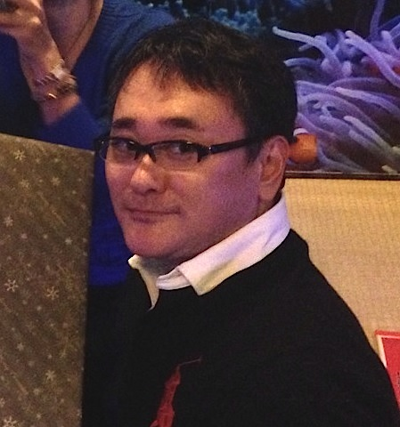

安里ゼミ
安里 肇 教授
専門分野／経営情報･教育工学
担当科目／経営情報システム論･ウェブマーケティング･プログラミング理論
島袋 覚

安里ゼミでは、集中的にアプリ･コンテンツ作りをするイベント「ハッカソン」や、独自のアイディアを競いあうビジネスプランコンテストなどへ参加することで、創造力や技術力を身につけることができます。それらの経験を生かして様々な分野の卒業研究を行い、毎年卒論発表会も実施しています。さらに資格試験対策にも取り組んでおり、ITパスポート試験の全員合格（２年次１４名･３年次１２名：当時）を達成しました。（一部の学生は基本情報技術者試験にも合格）また、県内外のIT企業の関係者を迎えた講演会も主催し、就職活動の準備を行っています。グループでのイベント参加も多く、東京OB･OG会も結成するなど縦の繋がりも強いです。ゼミ生は一人ひとりの目的意識が高く、協力し、競い合うことで切磋琢磨しています。